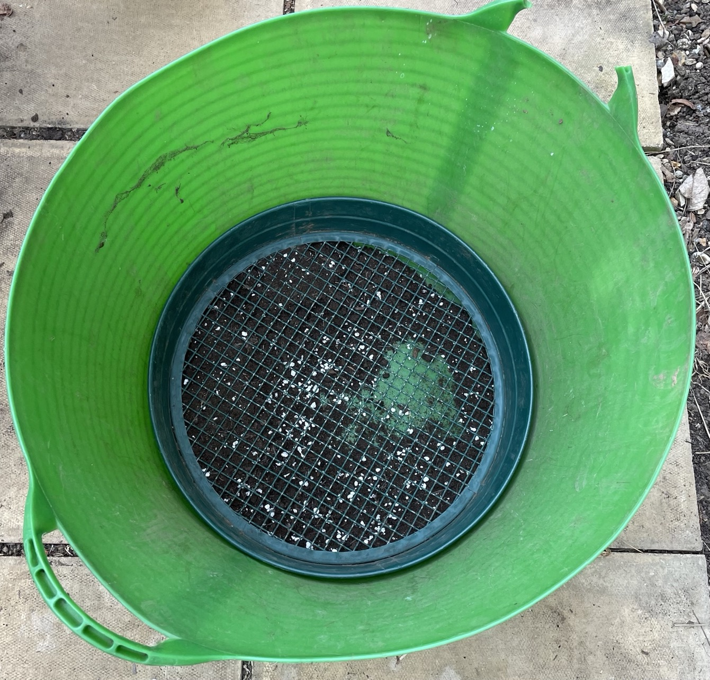

Various
General
Compost
- Mainly brown waste with 25-50% green waste
- Turn every month to aerate
- Fill in one go
- Compost grass Mar/Apr when no seeds
Veg patch
- Don't dig in mulch, leave covering surface to suppress weeds
Potting
- Sieve compost in large container
- Mix with perlite
